Projects
- PHPS — Port-Hamiltonian Power System Simulator
- Microgrid Hardware Testbed
- TCP PowerFactory-MATLAB-Python Bridge
- PIGNN — A Digital Twin Candidate for Power System
- Modular Contingency Analysis for Power Systems
- Fault Classification with Deep Learning
- Reinforcement Learning on Python-MATLAB TCP Bridge
- Neovim Config (LazyVim + LaTeX + Obsidian)
PHPS — Port-Hamiltonian Power System Simulator
PHPS is a power system simulator with built-in transient stability features. The core idea is based on Lyapunov theory that is the superior approach in stability analysis, but finding a general Lyapunov function is the main challenge. PHPS addresses this by providing the Lyapunov function at every step of the simulation so that stability can be quantified across arbitrary grid topologies under study. The interface is written in Python for flexibility, with a Python-to-C++ translation layer to keep the solver fast. PHPS is publicly available, so users can design their own components, simulate them and conduct stability assessment.

Microgrid Hardware Testbed
The Microgrid Hardware Testbed is a modular set of converters and inverters commonly used in a microgrid, isolated Buck converter, three- and four-leg voltage source converters, a Neutral Point Clamped inverter, and a line-commutated converter. This project is providing a flexible test bench for evaluating control scenarios and benchmarking a wide range of control algorithms, from model-based to model-free and ai-based, under realistic operating conditions. Every board is sensor-rich with built-in ADCs, so any microcontroller with an SPI/I2C interface can drive it. The testbed now serves as a shared platform in the lab for control development, characterisation, and validation across the converter family.
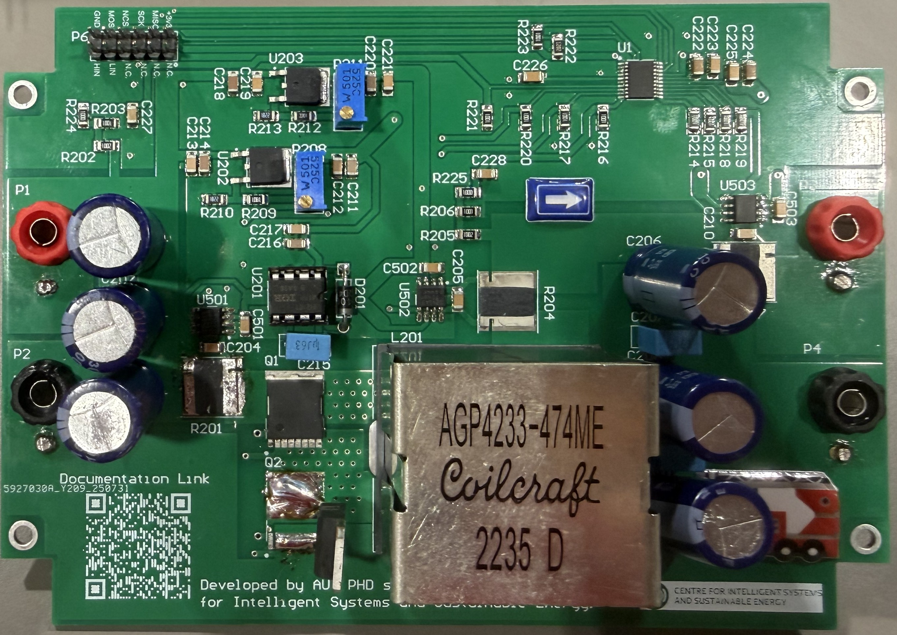


TCP PowerFactory-MATLAB-Python Bridge
The TCP PowerFactory-MATLAB-Python Bridge is a co-simulation framework I developed to link DIgSILENT PowerFactory, MATLAB/Simulink, and any TCP-capable client (Python by default) into a single synchronised simulation loop. Although these simulation tools, PowerFactory and MATLAB, provide some limited Python interface, no already existing solution allows users to employ well-developed libraries and packages in Python, or any other software in control system and Machine Learning while working with these simulation tools. This TCP interface bridge the gap by handling the synchronisation, data exchange, so any third party software, that communicates over TCP, can drive the controller or do system assessment while simulation is running on those simulation tools.
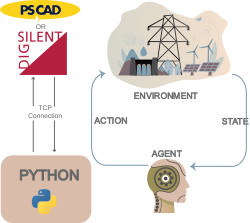
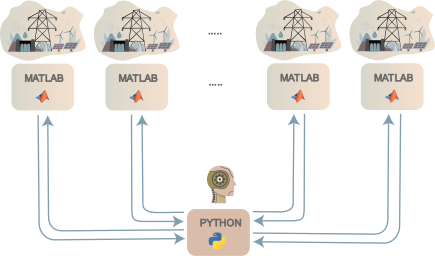
PIGNN — A Digital Twin Candidate for Power System
PIGNN is a graph-neural-network representation of a power system that acts as a digital twin, capturing the grid's intrinsic characteristics inside a learnable model. Physics-based models cannot capture every effect on a real grid, while pure ML models ignore the physics we already know. PIGNN combines both: the grid topology and equations are encoded into the GNN, and a learnable part adapts to component wear and operational changes.


Modular Contingency Analysis for Power Systems
A modular Python framework for N-1 and N-2 contingency analysis on power systems using DIgSILENT PowerFactory. The pipeline generates scenarios, solves post-contingency load flows, computes voltage sensitivities, builds Y-matrices from impedance data, and stores everything as structured HDF5 for downstream analysis.
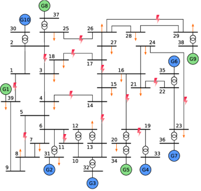
Fault Classification with Deep Learning
Deep learning models for fault detection and diagnosis in four-leg inverters. The companion dataset is published on Kaggle as four-leg inverter fault detection. This work published in the International Journal of Electrical Power & Energy Systems.

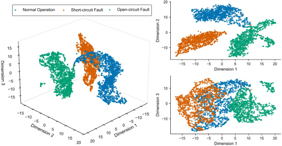
Reinforcement Learning on Python-MATLAB TCP Bridge
This project applies the TCP bridge to reinforcement learning, using a Simulink model as the RL environment and a Python agent that exchanges state and actions over TCP. To shorten the long training times that come with RL, Python's multiprocessing and multithreading options were tested side by side, and multiple training instances were run in parallel against separate Simulink workers. The parallel setup brought training time down by an order of magnitude compared with single-threaded runs.

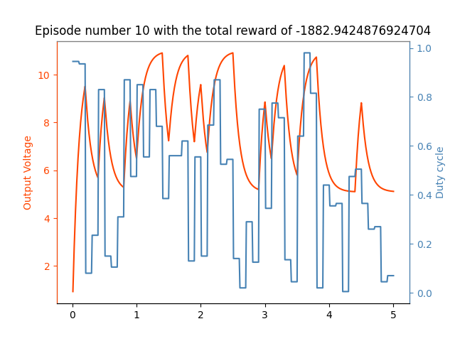
Neovim Config (LazyVim + LaTeX + Obsidian)
This project is my personal Neovim setup based on LazyVim, with plugins for LaTeX authoring, Obsidian note-taking, GitHub Copilot, and Zathura wired in as the LaTeX preview target. Configuring it from scratch in Lua became the development environment I use every day, and it is the kind of side project I keep coming back to whenever I want to learn a new tool.


Selected Publications
- Intelligent fractional order cascade control for wind energy conversion in wind farms
- Low-voltage solid state DCCB design based on bypassed bidirectional thyristor-capacitor suppressor
- Bidirectional Solid State Circuit Breaker with Passive Surge Absorber for LV Applications
- Hierarchical switch fault diagnosis in four-leg inverters of stand-alone wind energy conversion systems
- Adaptive mixed time-state dependent distributed event-triggered consensus protocol of a DC microgrids cluster
- A novel model-free defense scheme for power systems stability under cyber attacks
- Data-driven parameter identification of synchronous generators with state consistency and grid decoupling
- Mitigating GFM-induced battery stress with a VDCM-controlled hybrid energy storage
- Model order reduction for control and stability analysis in a DC microgrid
- State identification of DC microgrids using probabilistic methods in the presence of noise
- A modified Class-D resonance inverter for operating in load-independent condition
A novel intelligent fractional order cascade control to enhance wind energy conversion in wind farms: A practical case study
IEEE Transactions on Energy Conversion · 2025
In this work we propose a four-degree-of-freedom (4DoF) fractional-order cascade controller for wind farms based on doubly fed induction generators (DFIGs). The motivation is that wind speed is inherently uncertain, and this uncertainty degrades the dynamic performance of the conventional integer-order controllers used in wind energy conversion systems. The proposed controller combines a 4DoF inner block — built from fractional-order PID and tilt-integral-derivative control, which we call 4DoF-IHYB — with a fractional-order tilt-derivative outer loop that attenuates input noise and disturbances. To tune the controller's parameters under volatile operating conditions, we use a deep deterministic policy gradient (DDPG) reinforcement-learning agent. The method is validated on a practical case study of a wind farm in New Zealand, and the results show clearly improved dynamic stability, robustness, and disturbance attenuation compared with existing controllers reported in the literature.
Highlights
- Four-degree-of-freedom fractional-order cascade controller (4DoF-IHYB inner block + FOTD outer loop) for DFIG-based wind farms.
- DDPG reinforcement learning used to tune the controller parameters under wind-speed uncertainty.
- Validated on a practical case study at a wind energy facility in New Zealand.
- Improved dynamic stability, robustness, and disturbance rejection over baseline methods from the literature.
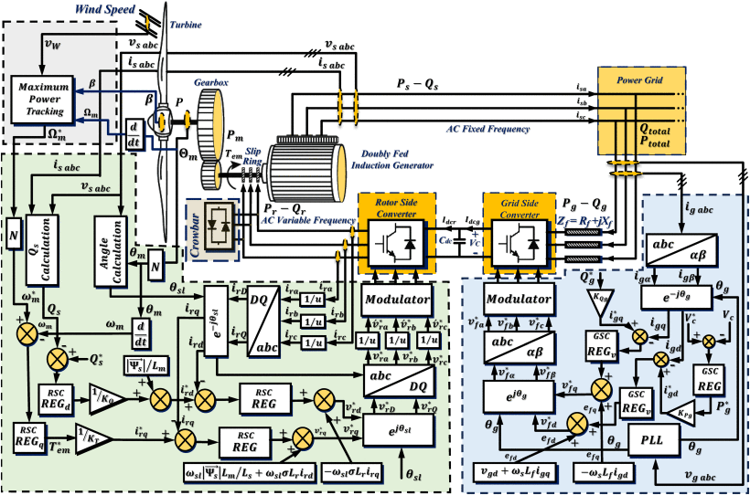
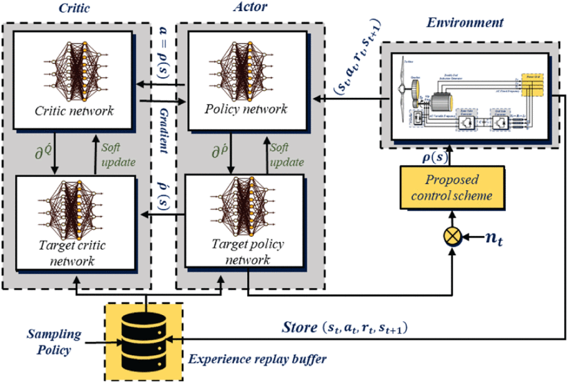
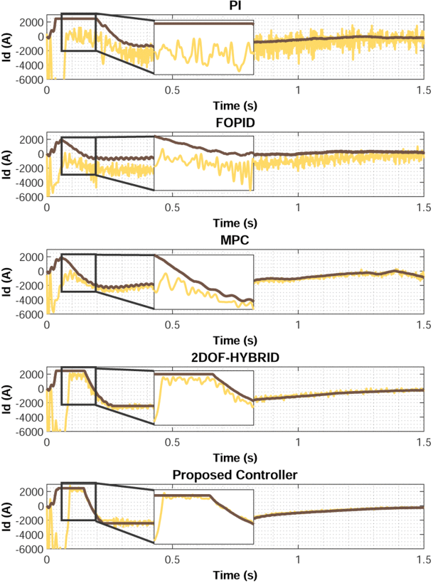
Low-voltage solid state DCCB design based on bypassed bidirectional thyristor-capacitor suppressor
IEEE Transactions on Power Electronics · 2024
In this work we propose a low-voltage solid-state DC circuit breaker (SS-DCCB) based on a novel bidirectional thyristor-capacitor (BiTriCap) suppressor. The motivation is that DC microgrids need fast, reliable current interruption with low overvoltage stress, and conventional MOV-based protection leaves measurable headroom on both metrics. The proposed design uses parallel snubber capacitors that absorb the switching transient and release the stored energy during the next switch operation, redirecting the surge into the bypassed capacitor and producing a clean zero-current crossing. The model accounts for both line and load inductances, and an ARM microcontroller manages the switch sequencing in real time. We validated the breaker experimentally at 48 VDC / 8 A — a design that scales to higher voltage and current ranges — and the prototype showed only 2 V of residual overvoltage across the main switch, with experimental waveforms matching the simulations across switching and fault scenarios.
Highlights
- Novel bidirectional thyristor-capacitor (BiTriCap) suppressor for solid-state DC circuit breakers in DC microgrids.
- Parallel snubber capacitors absorb the switching transient and release the stored energy on the next operation, producing a clean zero-current crossing.
- Real-time sequencing of the solid-state switches managed by a programmed ARM microcontroller.
- Experimentally validated at 48 VDC / 8 A with only 2 V residual overvoltage across the main switch; design scales to higher voltage and current ranges.
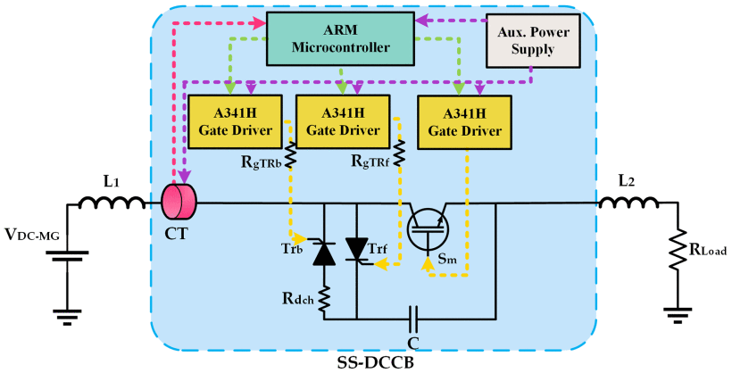
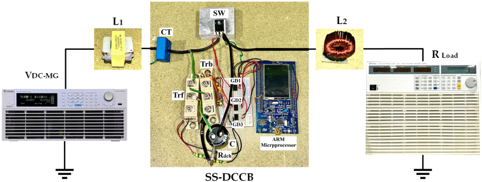
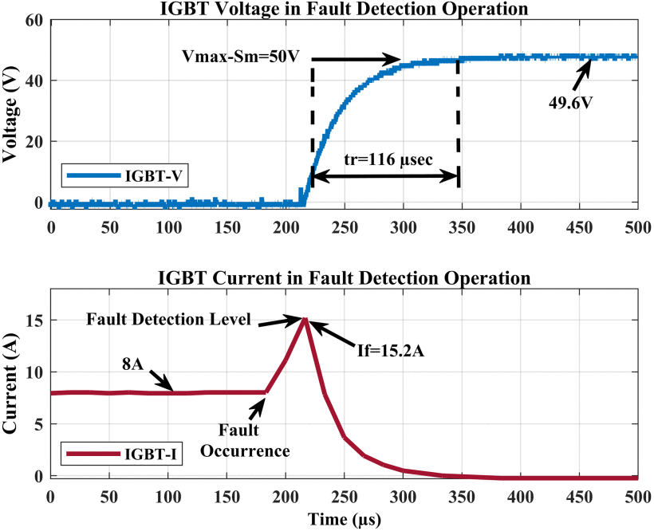
Bidirectional Solid State Circuit Breaker with Passive Surge Absorber for LV Applications
IEEE Journal of Emerging and Selected Topics in Power Electronics · 2025
In this work we propose a low-voltage solid-state circuit breaker (SSCB) based on a novel bidirectional passive technique (BPT) built around an RCD topology. The motivation is that DC microgrid protection benefits from breakers that are simple, bidirectional, and fully passive — limiting active components to the primary switch reduces cost, control complexity, and failure modes. The article details the working principles, operating modes, and the key design equations for the time intervals, voltages, and currents involved. The design was validated experimentally and in MATLAB at 48 VDC with a 10 A threshold fault current (Future Architecture of Network Project), achieving 20 µs to fully interrupt the load, 40 µs switching time, and 90 µs total fault clearing — with minimal surge voltage across the main switch.
Highlights
- Bidirectional passive technique (BPT) SSCB based on an RCD topology — only the primary switch is active.
- Fast interruption: 20 µs full load interrupt, 40 µs switching time, 90 µs total fault clearing.
- Rated for 48 VDC / 10 A (Future Architecture of Network Project).
- Validated by both MATLAB simulation and an experimental prototype.
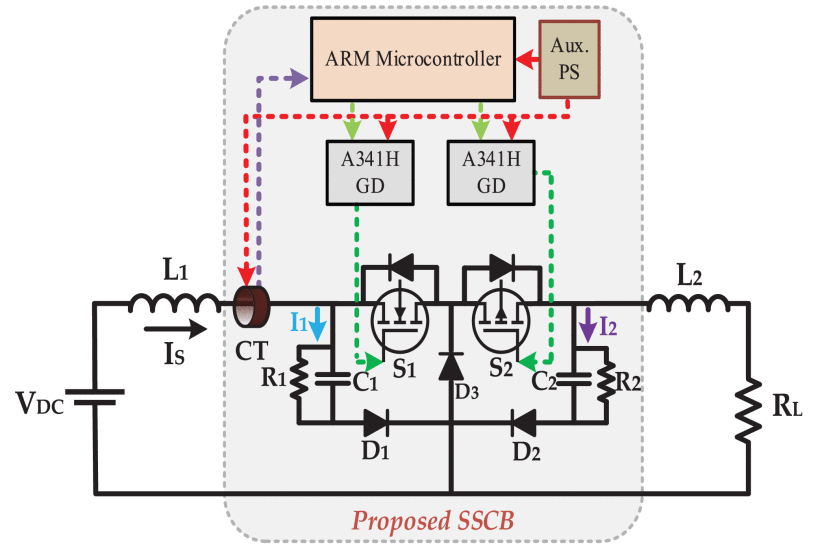
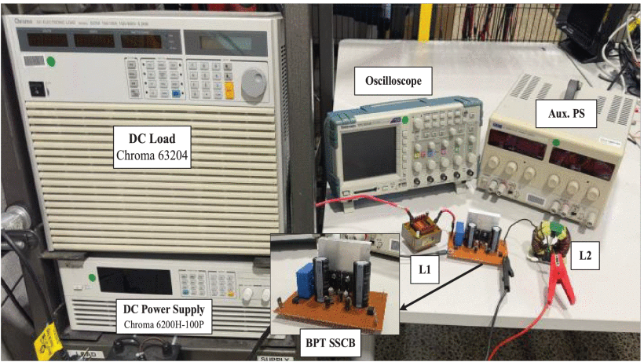
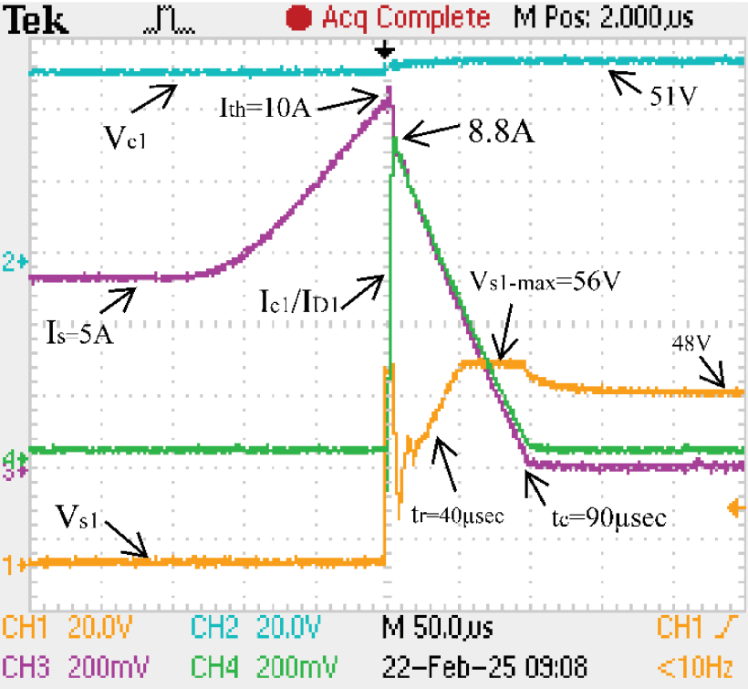
Hierarchical switch fault diagnosis based on transformer algorithm in four-leg inverters of stand-alone wind energy conversion systems
International Journal of Electrical Power & Energy Systems · 2026
In this work we propose a hierarchical Transformer-based fault diagnosis scheme for four-leg inverters used in stand-alone wind energy conversion systems. The motivation is that four-leg inverters are the standard solution for handling unbalanced loads in stand-alone wind setups, but their switching devices remain vulnerable to internal faults — and reliably identifying both the fault type (open-circuit vs. short-circuit) and the specific faulty switch is non-trivial under varying operating points. The proposed model uses a two-level hierarchical Transformer that first classifies the fault type and then localises the faulty switch. Datasets covering a wide range of operating scenarios were generated on an OPAL-RT hardware-in-the-loop setup to mimic real conditions. The results show that the Transformer-based diagnosis outperforms state-of-the-art machine learning algorithms, and the hierarchical two-level structure is consistently more effective than a single-level approach.
Highlights
- Hierarchical two-level Transformer-based fault diagnosis for four-leg inverters in stand-alone wind energy systems.
- Detects and classifies both open-circuit and short-circuit switch faults, then localises the specific faulty switch.
- Datasets generated with an OPAL-RT hardware-in-the-loop simulator across diverse operating points.
- Outperforms state-of-the-art ML baselines and a single-level structure on classification accuracy.
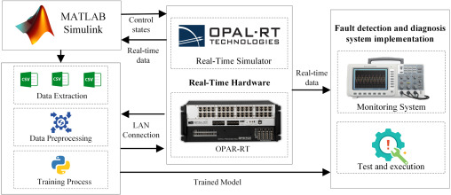
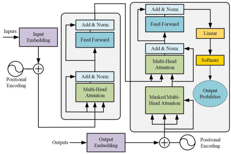
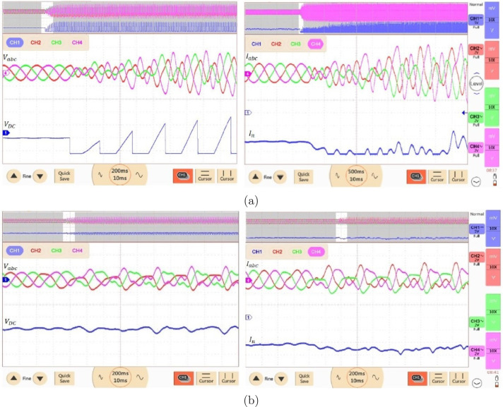
Adaptive mixed time-state dependent distributed event-triggered consensus protocol of a DC microgrids cluster
Electric Power Systems Research · 2025
In this work we propose the Adaptive Mixed Time-State Dependent Distributed Event-Triggered Consensus protocol (AMDETC) for the global control layer of a DC microgrid (MG) cluster. The motivation is that traditional consensus-based secondary control demands frequent communication between MGs, which makes the cluster sensitive to communication delays and limits scalability. The proposed protocol triggers updates only when a mixed time- and state-dependent condition is satisfied, sharply reducing the inter-MG communication load. We pair AMDETC with an adaptive fixed-time consensus algorithm (AFTA) — augmented by a saturation function — to accelerate current-sharing convergence, and use the Grey Wolf Optimizer (GWO) to tune the PI controllers in the secondary layer. The approach was validated in MATLAB on a four-DC-MG cluster and on OPAL-RT under realistic conditions, achieving 100% triggering accuracy, current convergence within 0.02 s, fast voltage recovery, and accurate proportional current sharing under load changes and fault scenarios.
Highlights
- Novel AMDETC event-triggered consensus protocol cuts inter-MG communication while maintaining cluster stability.
- Adaptive fixed-time consensus algorithm (AFTA) with a saturation function accelerates current-sharing convergence.
- Grey Wolf Optimizer (GWO) tunes the secondary-layer PI controllers for improved disturbance rejection.
- Validated on a four-DC-MG cluster in MATLAB and on OPAL-RT: 100% triggering accuracy, current convergence within 0.02 s.
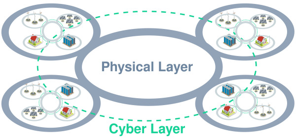
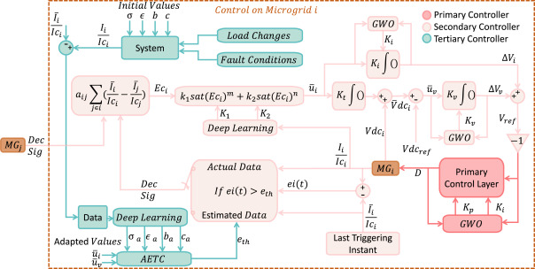
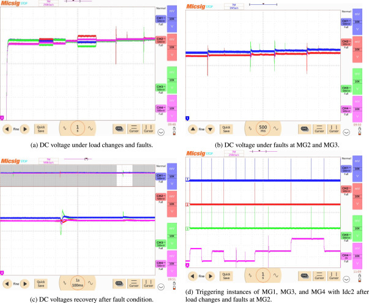
A Novel Model-Free Defense Scheme for Power Systems Stability Under Cyber Attacks
IET Generation, Transmission & Distribution · 2026
In this work we propose a model-free resilient defence scheme to protect the load frequency control (LFC) loop of a power system against false data injection (FDI) cyber-attacks. The motivation is that LFC depends on communication networks and is therefore exposed to FDI attacks, while existing defences require either a precise mathematical model of the system or extensive historical data — neither of which is always available. The proposed scheme combines a model-free observer that estimates the targeted frequency signal directly from measurement and control signals, a detector that compares the residual against a predefined threshold to flag attacks, and an event-triggered mechanism that — on detection — blocks the falsified signal and forwards the estimated one to the LFC controller. The observer's parameters are tuned by a deep reinforcement learning (DRL) algorithm. The scheme was validated in real time on Kundur's 4-unit-12-bus system using OPAL-RT and completely mitigated FDI attacks on the frequency response across multiple scenarios — with a design that is independent of the system's mathematical model, historical data, size, and complexity.
Highlights
- Model-free resilient defence scheme protecting load frequency control (LFC) against false data injection (FDI) cyber-attacks.
- Combines a model-free observer, a residual-vs-threshold detector, and an event-triggered mitigation mechanism.
- Deep reinforcement learning (DRL) tunes the observer parameters; no system model or historical data required.
- Validated in real time on Kundur's 4-unit-12-bus system with OPAL-RT — full mitigation across multiple attack scenarios.
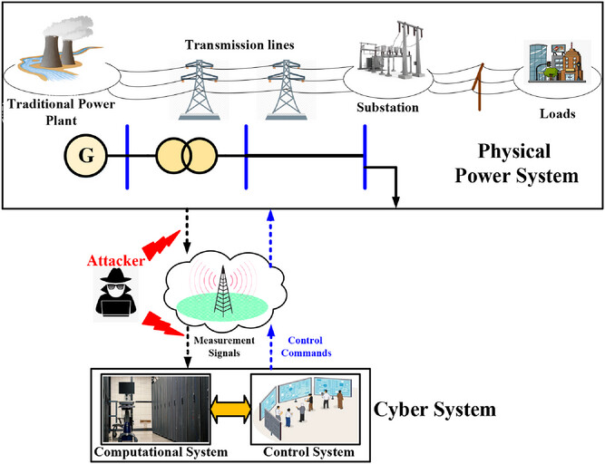
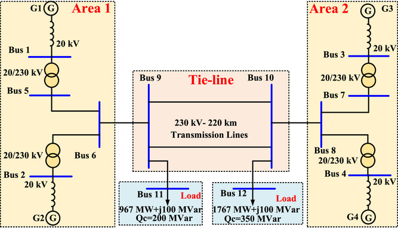
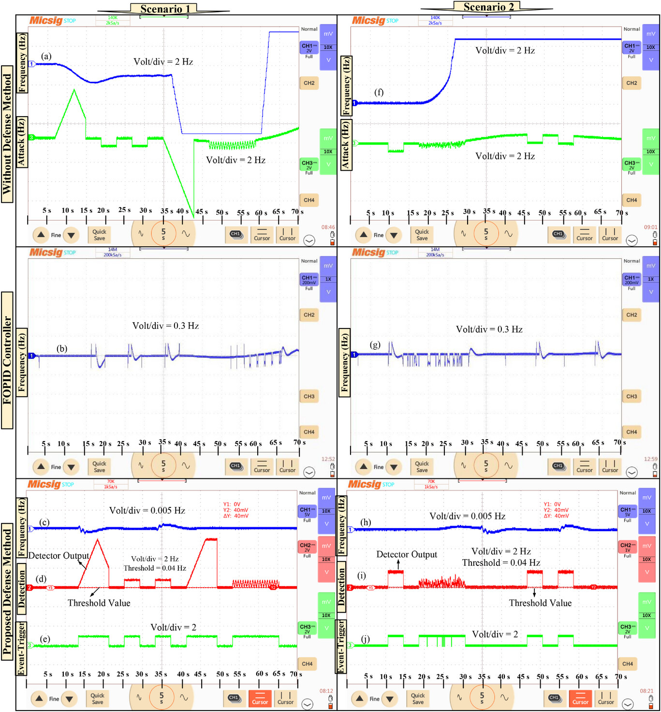
Data-Driven Parameter Identification of Synchronous Generators: A Three-Stage Framework with State Consistency and Grid Decoupling
Sensors · 2026
In this work we propose a three-stage data-driven framework for identifying the parameters of synchronous generators in a Port-Hamiltonian (PH) modelling form. The motivation is that PH frameworks offer inherently stable, energy-consistent, and modular representations for power-system stability analysis, but their practical deployment has been held back by the absence of high-fidelity, PH-compatible parameter identification methods that work from sensor measurements. The widely used IEEE Standard 115 procedure has fundamental limitations in this setting — single-scenario identifiability, noise-sensitive derivative-based formulations, and an inability to decouple generator-internal damping from grid contributions. Our framework resolves these issues with three contributions: a differential damping technique that separates generator damping from grid damping without isolating the machine, a derivative-free state-consistency optimisation that draws on 15 diverse excitation scenarios, and a physics-based regularisation that enforces PH structure so the identified model remains compatible with Lyapunov-based stability certification. We identified the eight key generator parameters (H, D, Xd, Xq, X′d, X′q, T′do, T′qo) with errors between 1.26% and 9.10%, and validated the resulting model with RMS rotor-angle errors below 1.2° and speed errors below 0.15% — accuracy sufficient for transient stability analysis, passivity-based control design, and oscillation damping assessment, using only standard simulation tools and terminal measurements.
Highlights
- Three-stage data-driven framework for Port-Hamiltonian (PH) parameter identification of synchronous generators.
- Differential damping technique decouples generator-internal damping from grid contributions without isolating the machine.
- Derivative-free state-consistency optimisation across 15 diverse scenarios; physics-based regularisation preserves PH structure for Lyapunov-based stability certification.
- Identifies 8 generator parameters with 1.26%–9.10% error; RMS rotor-angle error < 1.2°, speed error < 0.15%.
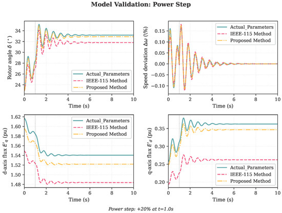
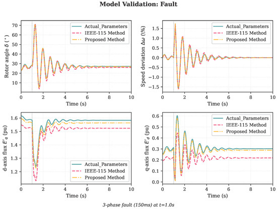
Mitigating GFM-Induced Battery Stress with a VDCM-Controlled Hybrid Energy Storage
IEEE PES International Meeting (PES IM) · 2026
In this work we propose a degradation-aware voltage-dependent current management (VDCM) strategy for a battery–supercapacitor hybrid energy storage system (HESS) supporting a grid-forming (GFM) inverter. The motivation is that as power systems become dominated by inverter-based resources, GFM converters take on stability duties that previously belonged to synchronous machines — and the battery behind a GFM inverter ends up exposed to high C-rates and severe current fluctuations during faults and sudden load changes, which accelerate degradation. The proposed VDCM strategy exploits the complementary characteristics of the two storage elements: the supercapacitor absorbs the fast transients (its high power density and low ESR are well suited to this role), while the battery handles the slower, energy-dense portion of the load. Simulations under a short-circuit fault and a sudden load change show that the strategy regulates voltage and frequency, significantly reduces both C-rate violations and current-fluctuation stress on the battery, and slightly improves GFM converter performance thanks to the supercapacitor's lower equivalent series resistance.
Highlights
- Degradation-aware VDCM strategy for a battery–supercapacitor HESS supporting a grid-forming (GFM) inverter.
- Offloads rapid transients to the supercapacitor to mitigate battery C-rate violations and current-fluctuation stress.
- Validated under short-circuit and sudden-load-change scenarios — voltage and frequency regulation preserved.
- Side benefit: slightly improved GFM converter performance due to the supercapacitor's lower ESR.
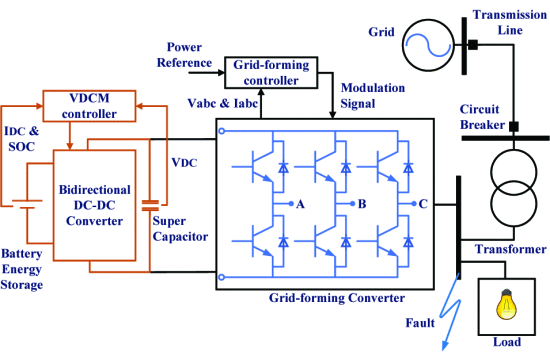
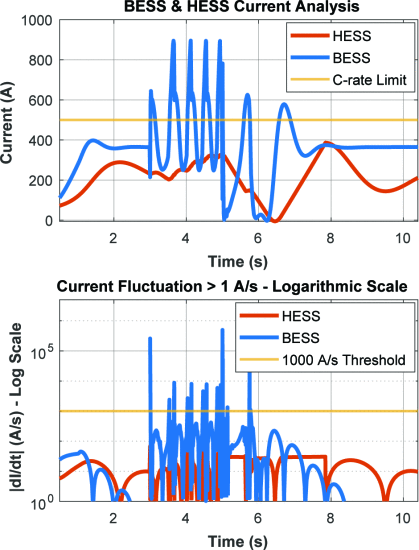
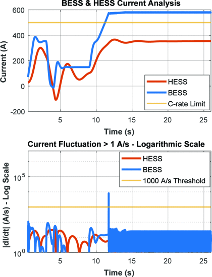
Model order reduction for control and stability analysis of complex dynamical systems in a DC microgrid
IEEE Power & Energy Society General Meeting (PESGM) · 2024
In this work we study how to control a high-order complex nonlinear system using a simpler reduced-order model, with the goal of cutting computational and hardware requirements without sacrificing performance. The motivation is that controllers designed directly on full-order models of complex dynamical systems are often expensive to implement on real hardware, while a reduced-order surrogate — if accurate enough — lets us design simpler controllers that still work on the original plant. We applied three classical model-order reduction (MOR) techniques — modal truncation, balanced truncation, and Hankel-norm approximation — to a six-state nonlinear sample system, reducing it to four states, and then designed linear quadratic regulators (LQR) on each reduced model. The LQR controllers were evaluated in MATLAB on the original full-order system. The results show that the Hankel-norm approximation outperforms the other MOR methods on accuracy and robustness, and that an LQR designed on the reduced model can be applied directly to the original system without modification.
Highlights
- Reduced-order modelling pipeline for designing LQR controllers on high-order nonlinear systems.
- Compared three MOR methods: modal truncation, balanced truncation, and Hankel-norm approximation.
- Six-state nonlinear sample system reduced to four states; LQR controllers tested on the original plant.
- Hankel-norm approximation gave the best accuracy and robustness; the reduced-model LQR works directly on the full-order system without modification.
.gif)
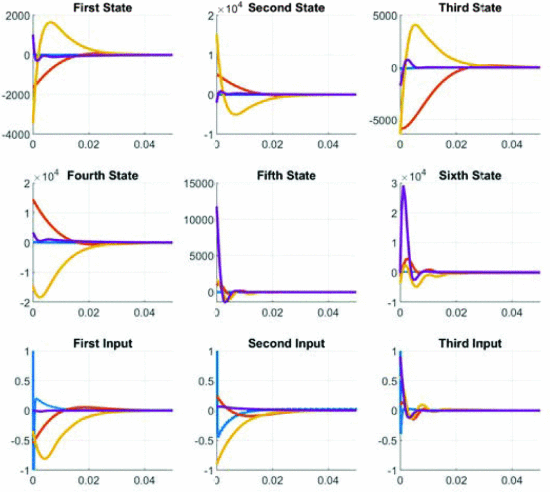
State identification of DC microgrids using probabilistic methods in the presence of noise
IEEE PMAPS · 2024
In this work we investigate three input-output system identification methods — Balanced Proper Orthogonal Decomposition (BPOD), the Eigensystem Realization Algorithm (ERA), and Observer/Kalman Filter Identification (OKID) — applied to a six-state DC microgrid model. The motivation is that real-world deployment of model-based control depends on identification methods that remain robust when sensor measurements are noisy, but evaluations in the literature often focus on idealised conditions. We exposed the identification process to noise during data collection in MATLAB and compared the three methods under both clean and noisy conditions. The results show that BPOD has the highest noise tolerance in simulation but is constrained in real-world deployment, whereas OKID strikes the best balance of robustness and accuracy, making it the more viable choice for practical system identification.
Highlights
- Compared three input-output model identification methods (BPOD, ERA, OKID) on a six-state DC microgrid.
- Identification process evaluated under both clean and noisy conditions to bridge simulation and real-world deployment.
- BPOD showed the highest noise tolerance in simulation but has practical implementation constraints.
- OKID delivered the best balance of robustness, accuracy, and real-world viability.
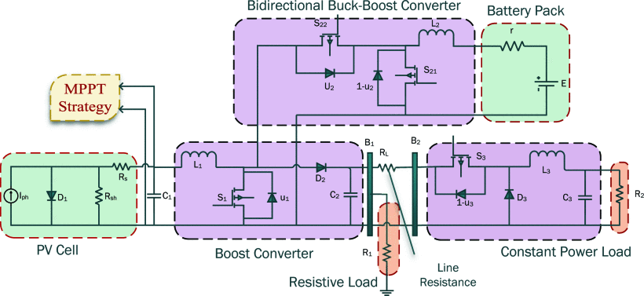
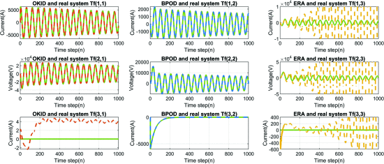
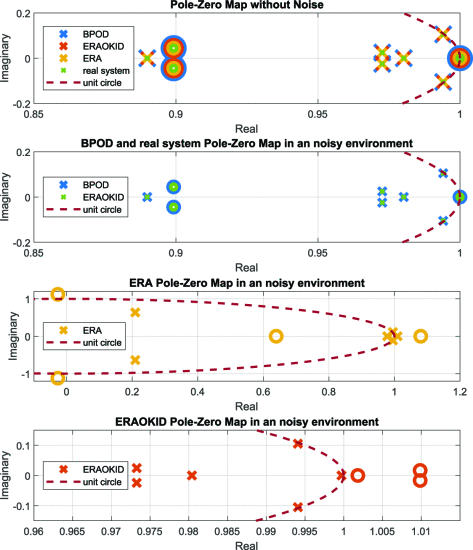
A modified Class-D resonance inverter for operating in load-independent condition
11th Power Electronics, Drive Systems, and Technologies Conference (PEDSTC) · 2020
In this work we propose a modified Class-D resonant inverter topology that maintains zero-current switching (ZCS) under wide load variations. The motivation is well-known in resonant power electronics: the resonant frequency depends on the load, so when the load changes the circuit drifts between inductive and capacitive operation, the switch current ends up either lagging or leading, and the soft-switching property — the whole reason to choose a resonant topology in the first place — is lost. We add an auxiliary circuit to a Class-D power stage that decouples the switch current from the load, so ZCS is preserved across the entire operating range. The detailed simulations confirm the behaviour: at the IGBT switching instants, di/dt drops from a theoretically unbounded value to about 106 A/s, placing the switches firmly in the soft-switching zone, with strong performance demonstrated at both light- and heavy-load extremes — a truly load-independent resonant inverter that also reduces fabrication cost, total losses, and converter size.
Highlights
- Modified Class-D resonant inverter topology that maintains zero-current switching (ZCS) under wide load variation.
- Auxiliary circuit decouples the switch current from the load, eliminating the load-dependence limitation of standard resonant inverters.
- Simulation: di/dt at IGBT switching reduced from an unbounded value to ~106 A/s, placing switches in the soft-switching zone.
- Lower fabrication cost, reduced total losses, smaller converter footprint; verified under both light- and heavy-load conditions.
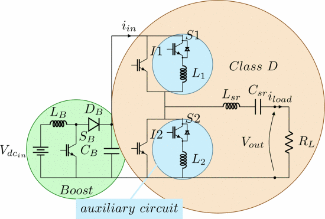
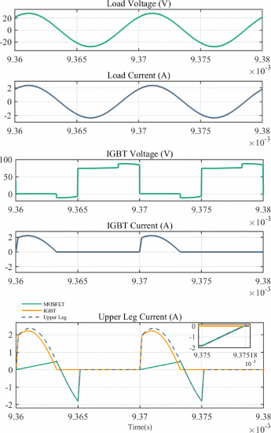
Skills, Teaching & Mentorship
Hardware and software skills built across a master's thesis on Class-D resonant soft-switching inverters, a PhD in power electronics and machine learning for power systems, and an open hardware microgrid testbed designed and brought up end-to-end.
Power Electronics — Analog & Digital Design
PCB Design & EDA
Circuit-Level Simulation
Lab & Instrumentation
Currently designing a custom impedance analyser for high-power converters and medium-power grid applications.
Programming & Tools
Machine Learning & Data
Teaching, Supervision & Mentorship
- Teaching Assistant — multiple undergraduate and postgraduate courses across power systems, power electronics, and renewable energy resources at Auckland University of Technology.
- Supervision — 18 students supervised: 5 final-year theses and 13 one-semester research projects.
- Peer Mentor (AUT) — ongoing technical and academic mentoring for bachelor's, master's, and PhD students.
- International collaboration — co-authored publications with researchers across multiple universities and countries (see Publications).
Co-Founder — Circuit Intelligent
Co-founder of Circuit Intelligent, an AI-assisted circuit-design platform for students and early-career engineers. The tool pairs classical EDA workflows with LLM-driven guidance to shorten the path from design intent to a working schematic.
About Me
I'm a PhD candidate at Auckland University of Technology, working at the intersection of power electronics, microgrid control, and machine learning for power systems. My research spans fault detection in power converters, data-driven system identification, model order reduction for DC microgrids, and physics-informed graph neural networks for grid dynamics.
Alongside my publications, I build the tools that support the work — compiled C++ DAE simulators, reinforcement learning environments coupled to MATLAB/Simulink, contingency analysis pipelines for DIgSILENT PowerFactory, and an open hardware microgrid testbed designed in Altium.
My Resume
Beyond Work
When I'm not in the lab you'll find me hiking , mountain climbing , cycling , or camping somewhere in the New Zealand bush . Off the trail I cook , shoot photos , and play electric lead guitar ; I love metal genre.